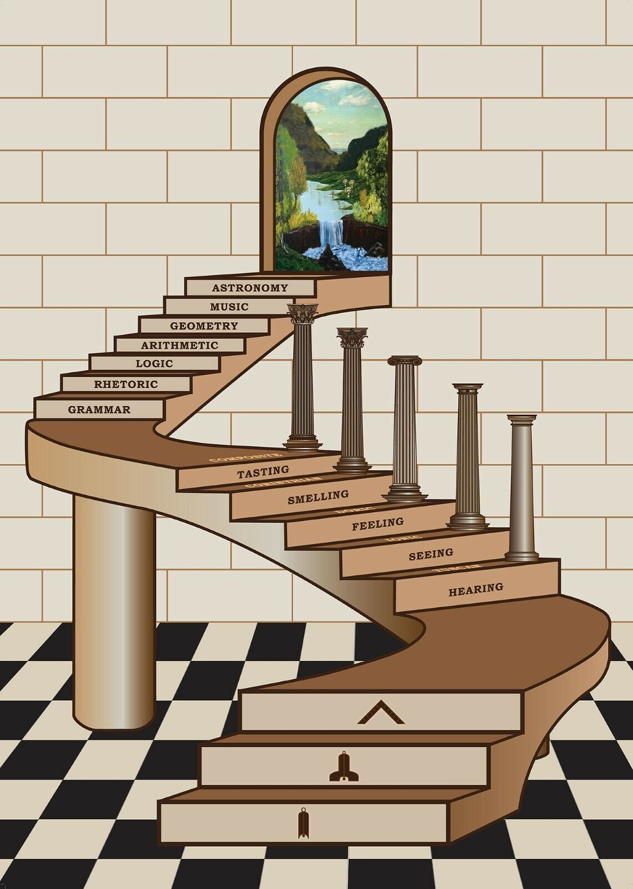
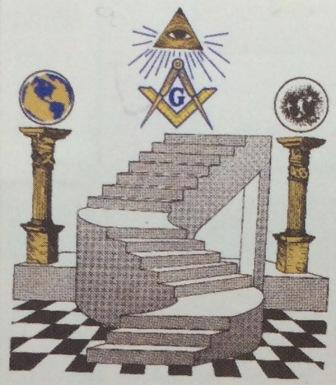
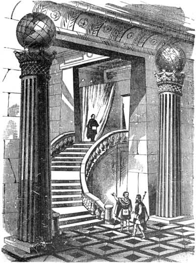
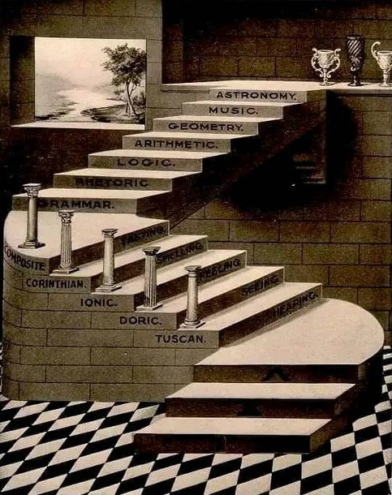
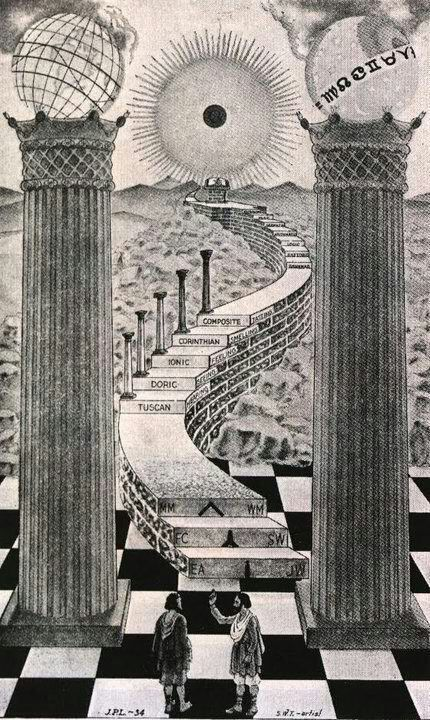
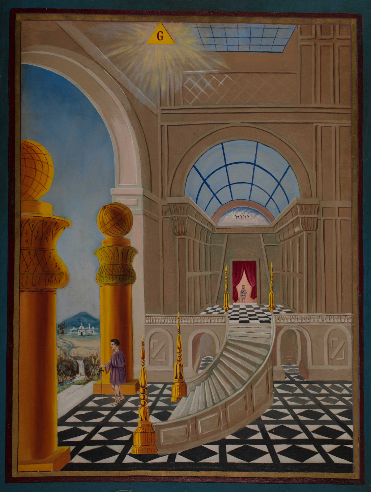

A Escada Sinuosa
Prefácio
A escada sinuosa, também conhecida como escada espiral, é um símbolo profundo e significativo na Maçonaria, especialmente no grau de Companheiro Maçom. Esta escada não é apenas um meio de locomoção vertical, mas um caminho simbólico que representa a jornada de crescimento espiritual, moral e intelectual do maçom.
Ao contrário de uma escada reta, a escada sinuosa exige mais esforço e cuidado para ser escalada, simbolizando que o progresso na vida e no conhecimento não é direto ou fácil. Cada passo na escada requer atenção e determinação, refletindo a natureza gradual e desafiadora do autoaperfeiçoamento.
A escada sinuosa é flanqueada por dois pilares imponentes, que também carregam um profundo significado simbólico: conhecidos como Jachin e Boaz, esses pilares representam força e estabilidade. Eles são uma lembrança da importância do equilíbrio e da solidez moral na vida do maçom. Jachin, geralmente associado à estabilidade e à firmeza, e Boaz, relacionado à força e à energia, juntos formam a base da estrutura simbólica que apoia a escada sinuosa. Eles simbolizam que o progresso espiritual e intelectual deve ser sustentado por um caráter forte e uma base ética sólida.
Os Três Primeiros Degraus

• A moral: Representa a base da conduta ética e dos princípios morais que o maçom deve seguir. É o fundamento da vida de um Companheiro, que deve agir com retidão e integridade.
• A virtude: Refere-se à prática das virtudes cardeais (prudência, justiça, fortaleza, temperança) e teologais (fé, esperança, caridade). A virtude é o caminho para a elevação moral e espiritual.
• O conhecimento: Simboliza a busca contínua pelo saber. Para o maçom, o conhecimento é um processo de aprendizado permanente, que envolve tanto o entendimento intelectual quanto a sabedoria espiritual.
Os Cinco Sentidos
• Visão: A visão é o sentido que nos permite perceber o mundo ao nosso redor através da luz. No simbolismo maçônico, a visão representa a clareza de pensamento e a capacidade de discernimento.
• Audição: A audição simboliza a habilidade de ouvir e compreender. Para os maçons, é crucial estar atento e ouvir as instruções e ensinamentos.
• Tato: O tato é o sentido do toque, que nos permite sentir e manipular objetos. Simbolicamente, representa a percepção direta e a habilidade prática.
• Paladar: O paladar é o sentido que nos permite distinguir sabores. Na Maçonaria, pode simbolizar a apreciação das coisas finas e a discriminação entre o que é bom e o que é prejudicial.
• Olfato: O olfato é o sentido que nos permite detectar cheiros. Simbolicamente, pode representar a intuição e a percepção sutil, a capacidade de detectar nuances que não são imediatamente aparentes.
As Sete Artes Liberais
As sete artes liberais são disciplinas de conhecimento que formavam a base da educação na antiguidade e na Idade Média. Elas são divididas em duas categorias: o Trivium e o Quadrivium.
Trivium (As Artes da Linguagem)
• Gramática: A gramática é a arte da linguagem e das regras que governam a fala e a escrita. Simbolicamente, representa a importância de uma comunicação clara e precisa.
• Lógica: A lógica é a arte do raciocínio correto e do pensamento crítico. Para os maçons, simboliza a necessidade de pensar de forma clara, racional e fundamentada.
• Retórica: A retórica é a arte de falar e persuadir de forma eficaz. Na Maçonaria, representa a habilidade de comunicar ideias e influenciar os outros de maneira positiva.
Quadrivium (As Artes dos Números)
• Aritmética: A aritmética é a arte dos números e do cálculo. Simbolicamente, representa a importância da precisão e do entendimento das relações numéricas no Universo.
• Geometria: A geometria é a arte das formas e do espaço. Na Maçonaria, é particularmente significativa, pois a geometria é vista como a base de toda a arquitetura e construção, tanto literal quanto figurativamente.
• Música: A música é a arte dos sons e das harmonias. Representa a harmonia e a ordem no Universo, bem como a importância do ritmo e da melodia na vida humana.
• Astronomia: A astronomia é a arte de estudar os corpos celestes. Simbolicamente, representa o conhecimento do cosmos e a compreensão das leis naturais que governam o Universo.
Significado Simbólico
A escadaria maçônica, com seus degraus e etapas, simboliza a jornada do maçom em direção ao aperfeiçoamento pessoal e espiritual. Cada degrau representa uma fase de aprendizado e desenvolvimento. Ao subir a escada, o maçom é incentivado a desenvolver suas virtudes morais e intelectuais, ampliando seu entendimento e aplicando esses princípios em sua vida.
A escadaria também pode ser vista como uma metáfora para a ascensão espiritual, na qual o maçom, através da fé, esperança e caridade, e com o uso dos sentidos e das artes liberais, busca alcançar uma compreensão mais profunda de si mesmo e do Universo, elevando-se acima das limitações mundanas para alcançar a sabedoria e a iluminação.